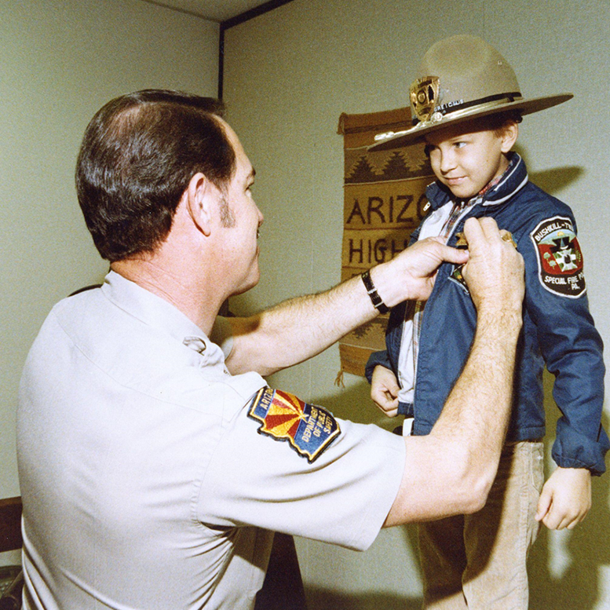

부모로서 우리 아이가 조금이라도 아픈 기색을 보이면 마음을 졸입니다. 하물며 난치병에 걸린 아이의 부모와 가족의 마음은 어떨까요?
우리는 2006년 메이크어위시 재단과 처음 인연을 맺었습니다. 재단을 통해 난치병 어린이들과 가족이 겪는 아픔에 대해 알게 되었어요. 난치병 어린이의 소원성취가 고된 투병생활 속에 희망과
행복을 줄 수도 있다는 것도 알게되었죠.
우리의 핵심 가치 중 하나는 사회와의 나눔입니다. 그 가치를 실현하고자 노엘로힐스는 수익금의 2%를 메이크어위시 코리아에 기부해요. 그리고 그 기부금은 국내 난치병 어린이의 소원을
이루어주는데 소중히 사용됩니다.

MAKE A WISH STORY
백혈병을 앓고 있던 7살 크리스는 경찰관이 되고 싶은 간절한 소원이 있었습니다. 1980년 미국 경찰국의 도움으로 명예 경찰관이 된 크리스는 제복을 입고 경찰 선서를 했으며, 헬기를 타고
범인을 잡는 체험을 했습니다. 이날은 크리스에게 생애 최고의 날이었어요. 하지만 사흘 후, 그는 우리 곁을 떠나갔습니다.
이 일은 1980년 메이크어위시 재단이 탄생한 계기가 되었고, 현재 전 세계 39개 지부에서 50만명 이상의 난치병 어린이들의 소원을 이루어주는 세계 최대 소원성취 전문기관입니다.
메이크어위시 코리아는 2003년에 설립되었으며, 지금까지 4,800명 이상 되는 국내 난치병 어린이들의 소원을 성취해줬습니다.